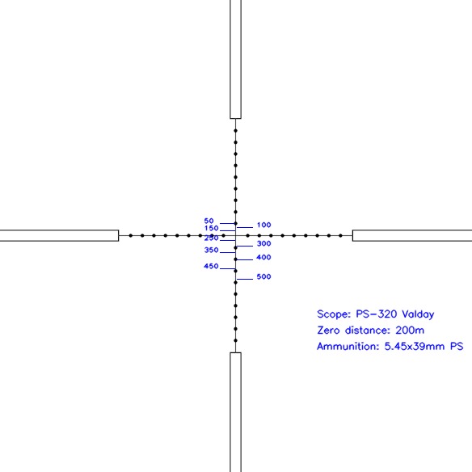

Asteroids Remake
(C#, .NET)
A recreation of the arcade game Asteroids. My objective during the creation of this replica was to make the experience as close to the original as possible. This entire game was made from the ground up, with no external libraries for game design being used.
Reticle Painter for Escape From Tarkov
(Python)
I have played the game Escape from Tarkov, a realistic First Person Shooter, for several years. I frequently use tools like Tarkov Ballistics to calculate the ballistic drop for weapons in game. However, I sometimes found it difficult to properly utilize these results in game: While the ballistic results are accurate, the reticles of in game scopes are not correctly scaled. To help with this issue, I made a simple Python application to properly scale scope reticles and generate a reference image showing where the player needs to aim for certain distances.

As the program works currently, the user needs to enter their information into the calcualtor online, download the HTML file, and the program then parses the needed information from the HTML file. This was done for the time being in anticipation for Tarkov Ballistics to publicly release their API. However, Tarkov Ballistics was discontinued at the end of 2024. Currenly, I am planning on developing this into a more developed application and releasing in the future.
Nexus Mods
(multiple technologies)
In my free time, I enjoy publishing content on Nexus Mods. I find making game mods is a great way to gain experience in user feedback and troubleshooting assistance for a production environment. As of 2/17/2025, I have reached over 3000 unique downloads and over 3800 overall downloads. My Nexus Mods page is able to be visited here.